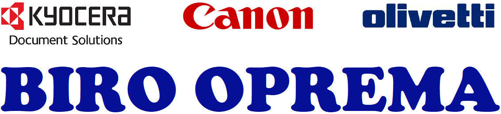
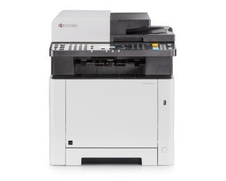

BIROOPREMA ĐORĐEVIĆ

KYOCERA ECOSYS M2735DN Laser
|

|
||
| Štampa | Tip | Multifunkcijski laser |
| Boja | Monohromatski (crno-beli) | |
| Funkcionalnost | 4-u-1: štampač, skener, kopir, faks | |
| Format | A4 | |
| Sistem štampe | KYOCERA ECOSYS Laser | |
| Rezolucija štampe | 1200 dpi | |
| Duplex štampa | Da | |
| Brzina monohromatske štampe | 35ppm | |
| Vreme štampe prve strane | 6.9 sekundi | |
| Maksimalni mesečni obim štampe | 20.000 strana | |
| Skeniranje | Brzina skeniranja monohromatski | 40ipm |
| Brzina skeniranja u boji | 23ipm | |
| Rezolucija skeniranja | 600 x 600 dpi | |
| Podržani profili | TWAIN, WIA, WSD | |
| Podržani formati skeniranja | TIFF, PDF, PDF/A, JPEG, XPS | |
| Kopiranje | Dodatne funkcijei | Dodatne funkcije Scan-once-copy-many, Elektronsko sortiranje, 5 stepena uveličavanja, ID copy, 25% - 400% umanjenje - uveličavanje, 7 stepena umanjenja |
| Povezivost | Povezivost | LAN (mrežni), USB |
| Ostale osobine | USB 2.0 priključak, 10/100/1.000Mbps Ethernet protok | |
| Potrošni materijal | Kapacitet inicijalnog tonera (crni) | 1000 strana |
| Kapacitet regularnog tonera (crni) | 3000 strana | |
| Toner | TK-1150 | |
| Servisni set | 100.000 strana | |
| Ostalo | ||
| Displej | Monohromatski LCD | |
| Procesor | 800MHzC | |
| Memorija | 512MB | |
| Emulacije | PCL6, PostScript 3 (KPDL 3), PDF Direct Print | |
| Kapacitet fioke | 100 listova (multipurpose tray), 250 listova (maksimalni kapacitet: 850 listova) | |
| Podržana debljina papira | 60g/m2 - 220g/m2 | |
| Nivo buke | 47.2dB | |
| Fizičke karakteristike | Dimenzije | 437mm x 417mm x 412mm |
| Masa | 19kg | |
| Boja | Crno-bela | |
| Garancija | Garancija | 2 godine |